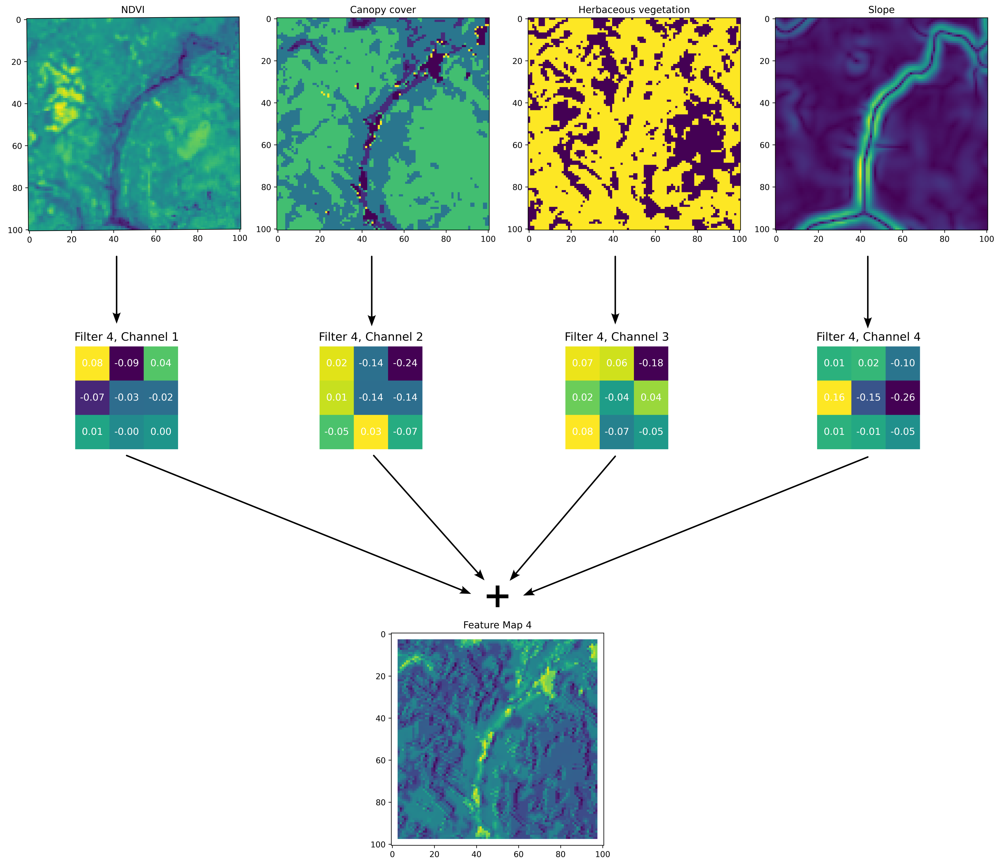

Deep Learning Concepts
![]()
To help understand how the deepSSF model represents animal movement, we show some deep learning concepts in the context of the deepSSF model.
Some parts of these are taken directly from the main text of the paper, and some from the Supplementary Materials, both of which we have expanded.
Convolutional Layers
The convolutional layers employed in our neural network architecture are also known as two-dimensional convolutional layers. Two-dimensional convolutional layers provide a mechanism to learn new features or variables of predictive value from gridded data using sets of convolutional weights that are re-used at different locations over two-dimensional space. The input to a two-dimensional convolutional layer is a three-dimensional input tensor, \(\mathbf{Q}\), with dimensions \((d, d, n)\). In the context of our application, \(\mathbf{Q}\) represents a stack of \(n\) spatial covariates in a \(d \times d\) pixel region of habitat surrounding an individual, which in our case was 101 x 101 cells with 25 m x 25 m resolution. Each of the \(n\) spatial covariates (i.e., NDVI, slope, etc.), is usually referred to as a ‘channel’.
The convolutional layer transforms this stack of spatial layers into a new three-dimensional tensor, \(\mathbf{O}\), with dimensions \((d, d, F)\) through the application of \(F\) unique convolution filters (also called kernels) that are learned in neural network training. As convolution layers can be considered to transform the inputs covariates and ‘extract features’ from them, the resulting layers denoted by \(F\) are often called ‘feature maps’ (see Figures below). Each filter can be represented as a \((2w + 1) \times (2w + 1) \times n\) tensor of weights and we denote the collection of these filters as \(\mathbf{W}^{(1)}, \dots, \mathbf{W}^{(F)}\).
The hyper-parameters \(w\) (the spatial width and height in pixels of the filter) and \(F\) are user-specified, and in our application were set as \(w = 1\) and \(F = 4\) in all cases except in the final convolutional layer that had \(F = 1\) to aggregate the preceding feature maps into the final habitat selection map. For \(w = 1\), each filter can be thought of as consisting of \(n\) convolution filters of dimension \(3 \times 3\). Applying filter \(f \in \{ 1, \dots, F \}\), results in a \(d \times d\) matrix, \(\mathbf{O}^{(f)}\), with elements
\[ \mathbf{O}^{(f)}_{i, j} = \sigma \left( \sum_{x = 0}^{2w} \sum_{y = 0}^{2w} \sum_{z = 1}^{n} \mathbf{W}^{(f)}_{x + 1, y + 1, z} \mathbf{Q}_{i - w + y, j - w + x, z} + b_f \right), \]
where we take \(\mathbf{Q}_{i, j, z} = 0\) for any index for which one or more of the following is true: \(i < 1\), \(i > d_i\), \(j < 1\), or \(j > d_j\). The parameter \(b_f\) denotes the added bias parameter (a scalar that is analogous to an intercept in a regression model) for each filter and that is also learned during training. The function \(\sigma(\cdot)\) is an activation function that is applied element-wise to its argument. For our model, the activation function was the rectified linear unit (ReLU), defined as \(\text{ReLU}(x) = \max(0, x)\).
The output tensor of the two-dimensional convolutional layer is the tensor created by combining each of the matrices \(\mathbf{O}^{(1)}, \dots, \mathbf{O}^{(F)}\) along a third dimension. The elements of \(\mathbf{O}\) can therefore be written as \(\mathbf{O}_{i, j, k} = \mathbf{O}^{(k)}_{i, j}\). Ultimately, each two-dimensional convolutional layer introduces \(F[(2w + 1)(2w + 1) n + 1]\) parameters to the model that must be learned from the training data.
Here we show a single convolution filter from the habitat selection network and the resulting feature map (prior to being processed by an activation function, which in our case was the ReLU). A single convolution filter has \(n\) channels that relate to the \(n\) channels of the input layers, and each filter channel convolves over its respective input layer, which are then added together to create the feature map for that filter.
To understand the convolution process, imagine the convolution filter channel starting in the top left corner of the spatial input, say NDVI, with the central cell of the filter in the top left corner. For each cell, the value of NDVI will be multiplied by the corresponding cell in the filter channel, resulting in nine values, which are then summed together to form the top left cell in the intermediate feature map (which are not shown here). The filter then moves to the right by one cell (as the stride is equal to one), and the element-wise multiplication is repeated. This results in transformations of many small, overlapping windows across the spatial input, resulting in another layer (the intermediate feature map).
This process is repeated for the next input layer, which has its own filter channel, until each input layer has been processed into an intermediate feature map. These intermediate feature maps are then summed to create the output feature map for that filter. During training it is the values of the convolution filters that are updated. It can be helpful to see this process animated, and an example of an animation of a convolution filter across multiple channels can be found at: https://animatedai.github.io/. In the linked animation, the inputs are \(7 \times 6 \times 8\), and each coloured block in the middle represents a \(3 \times 3 \times 8\) filter, and in total there are 8 filters. Each coloured layer in the output to the right represents a feature map. Note that there is no padding for these operations, which results in a dimension reduction, but below there is an animation is shown with padding which retains the \(d \times d\) dimensions of the inputs, such that we have used in our deepSSF model.

The benefits of deep learning come from many small operations combining together to represent complex and abstract processes. Here we show all of the convolutional layers that were used in the habitat selection subnetwork, except that for clarity we do not show the temporal inputs (hour of the day and day of the year decomposed into sine and cosine terms), which are also converted to spatial inputs, as shown in Figure 1 in the main text. Each \gls{convolution filter} has a channel for each of the spatial inputs and produces a single feature map.
In Convolution Layer 1 there are four filters, resulting in four feature maps, which each extract different aspects and features of the inputs (i.e. transform them in different ways). In Convolutional Layer 2 there are also four filters, except that the inputs to this layer are the feature maps outputted by Convolutional Layer 1. Convolutional Layer 3 then takes the feature maps from Convolutional Layer 2 as inputs and processes and aggregates them into a single feature map, which are the log probabilities of the habitat selection subnetwork (there is no ReLU after this layer meaning that there can be values less than zero). The successive convolutional layers are what give deep learning their name, where depth is described by the number of successive processing layers, allowing for the models to learn a representation for abstract features in the input covariates.

Fully-connected Layers
Fully-connected layers, also called feedforward or dense layers…